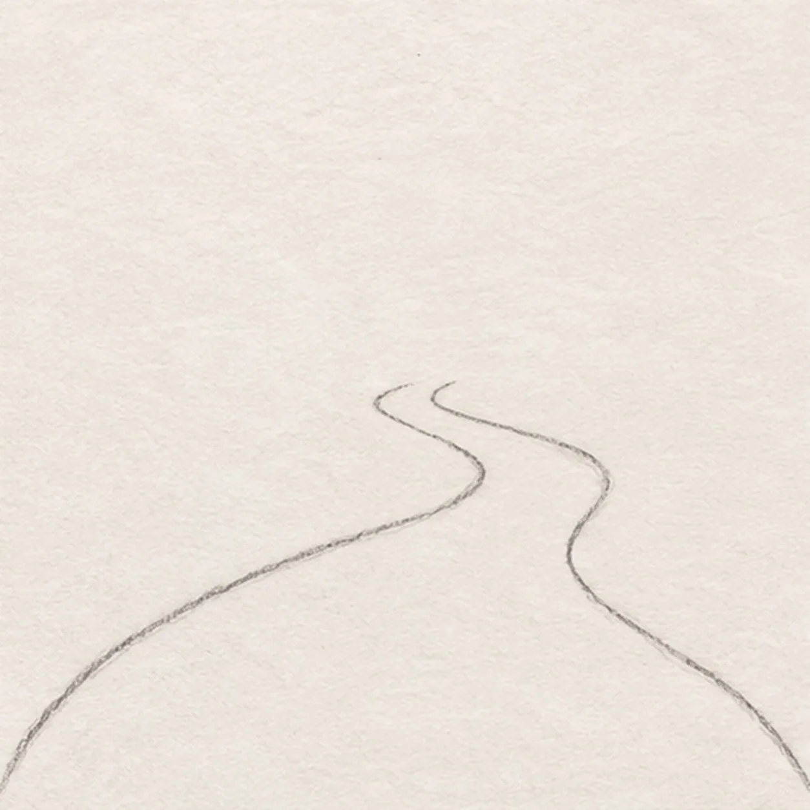
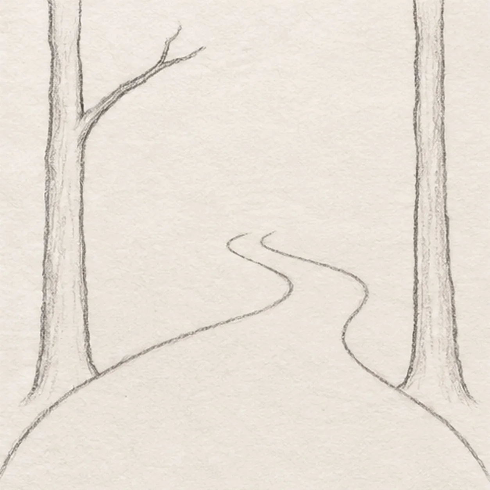
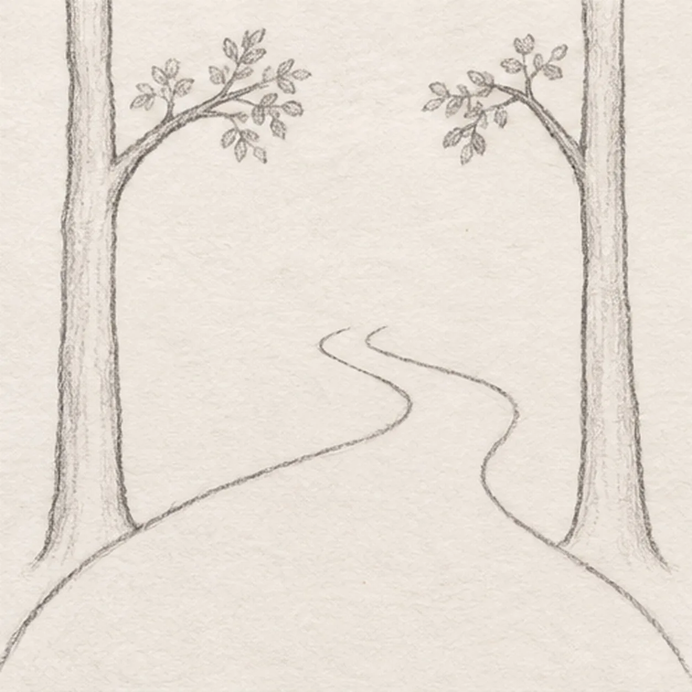
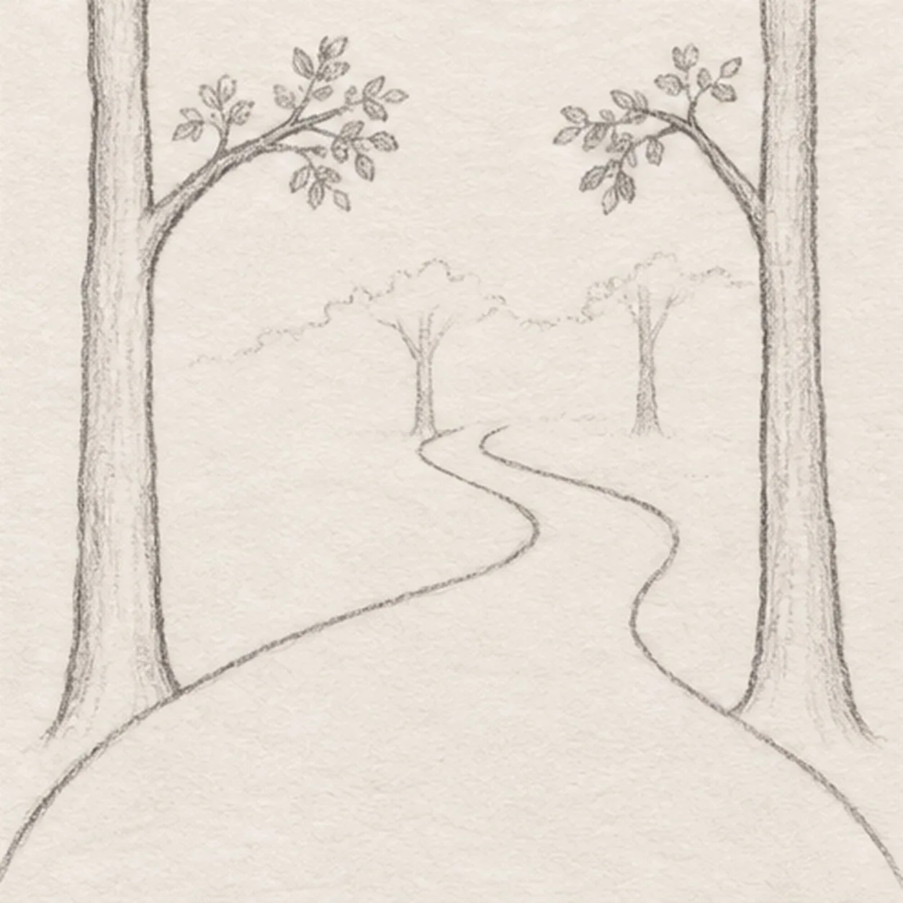
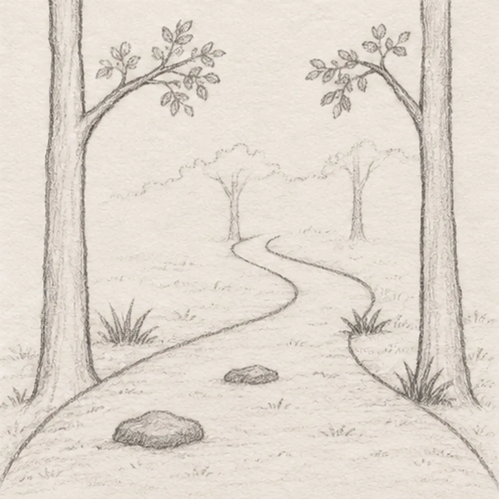

From the archive
Let's draw a forest trail
Treat this as one small practice round: build the subject lightly, notice the shapes, then darken only the lines that help the finished sketch.
-
01

Shape the winding path
Near the page bottom, draw two long uneven curves from the lower left and lower right. Bring them close together at a bend above center, leaving a narrow opening into the distance.
Sketch tip: Ghost both long curves before drawing; their narrowing gap gives the scene its depth.
-
02

Plant the near trees and left fork
Outside each lower path edge, draw one tall rooted trunk. Fork one branch inward from the upper left trunk; keep the right trunk bare for now.
Sketch tip: Compare the trunk bases to the path edges. Each tree must stand beside, never inside, the trail.
-
03

Leaf the near branches
Fork one branch inward from the upper right trunk. Add loose small leaf clusters along that branch and the existing left fork, keeping both trees rooted beside the same trail edges.
Sketch tip: Build each branch outward from its trunk before adding leaves; keep leaf clusters open enough to show the connection.
-
04

Set the distant woods
Beyond the narrow bend, place two slim upright trunks and one broken distant canopy line. Keep these marks smaller and lighter than the foreground trees.
Sketch tip: Use lighter pressure and shorter trunks in the distance so those trees sit behind the near pair.
-
05

Texture the trail
Set three grass tufts beside the existing trail: one left of the near bend, one by the right bend, and one at the right trunk base. Place two flat stones inside the lower path, then scatter very light ground hatching without changing either trail edge.
Sketch tip: Count three anchored tufts and two path stones; let the light ground hatching follow the terrain.
-
06

Shade the forest path
Deepen selected existing trunk, branch, and stone lines. Shade the foliage and grass muted green and the trunks and path warm brown, leaving the distant woods and path center light.
Sketch tip: Squint at the finish: the near trunks should read darker than the small trees at the bend.